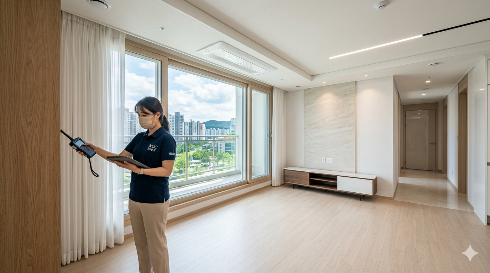
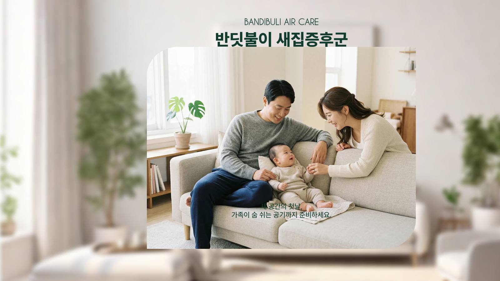
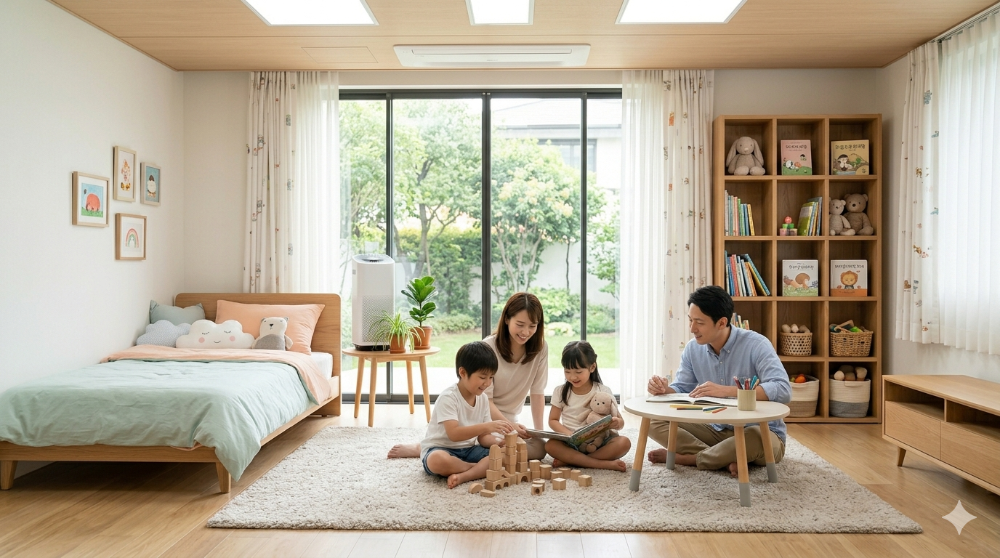
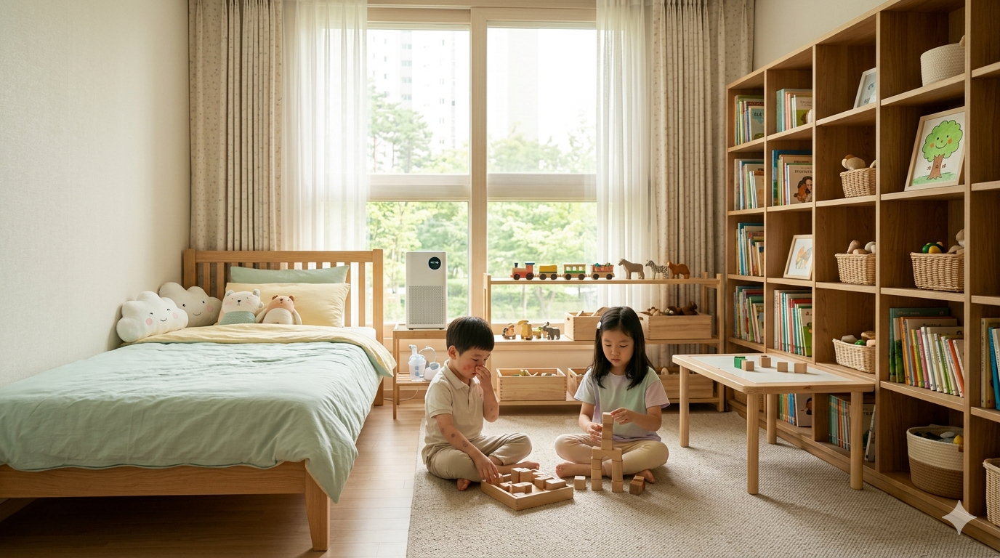
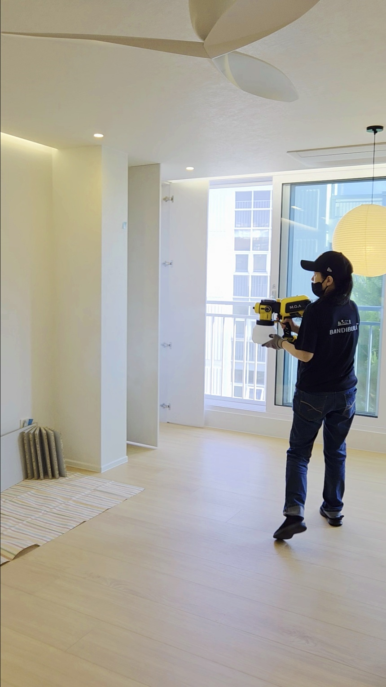
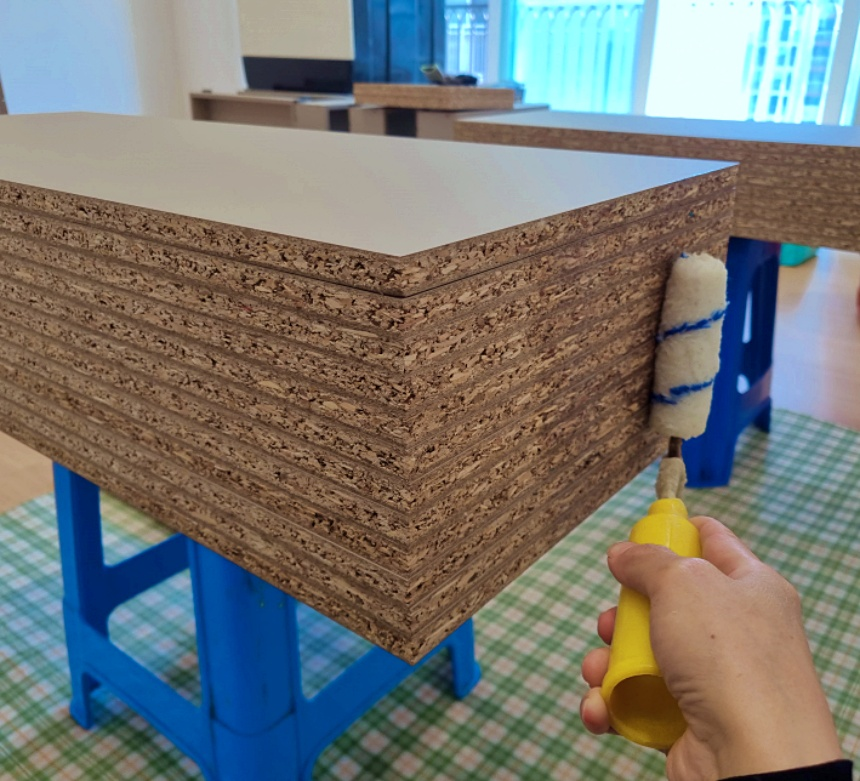
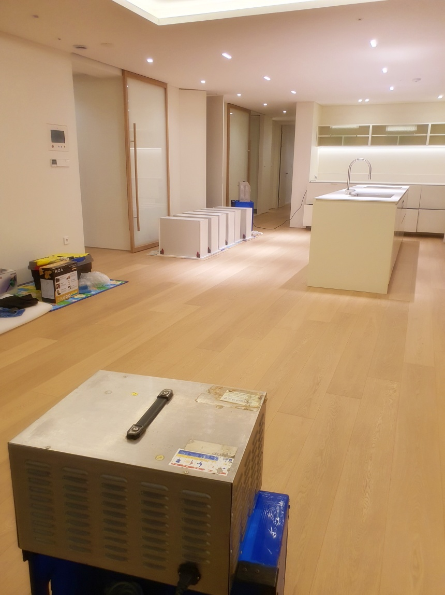
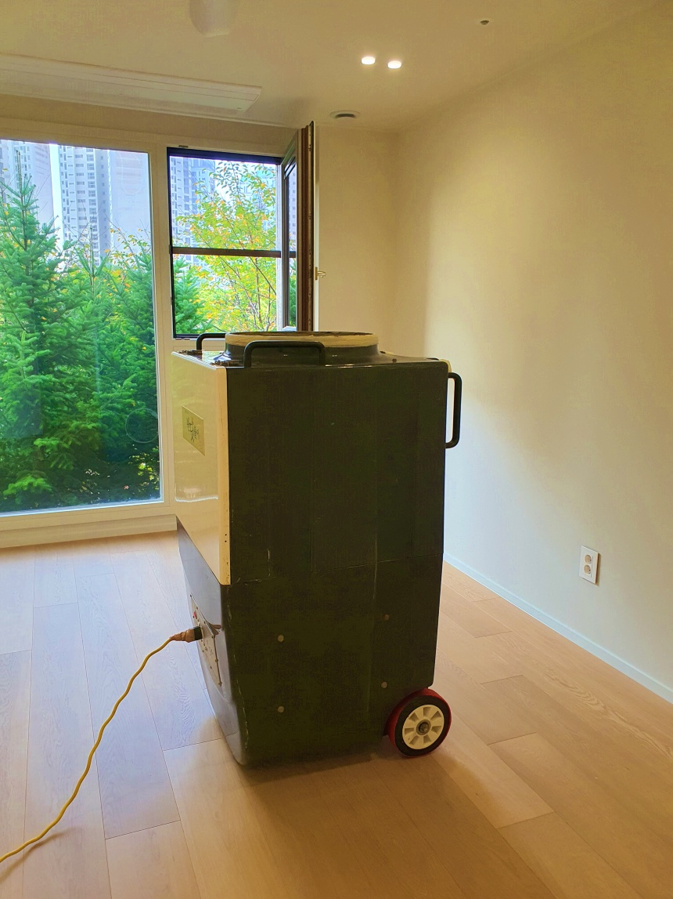

01
입주 전·후 새집증후군 및 실내 오염물질 관리
입주 전 공간 전체의 오염 발생원을 진단하고, 새집 냄새와 실내 오염물질을 줄일 수 있도록 현장에 맞는 공정별 맞춤 관리로 쾌적한 실내 환경을 만들어 드립니다.

Care scope
입주 전·후 새집증후군, 영유아 실내 공기질, 환경 민감군 케어까지 기존 안내 내용을 시공정보 안에서 함께 확인할 수 있습니다.

입주 전 공간 전체의 오염 발생원을 진단하고, 새집 냄새와 실내 오염물질을 줄일 수 있도록 현장에 맞는 공정별 맞춤 관리로 쾌적한 실내 환경을 만들어 드립니다.

면역 체계가 완전히 발달하지 않은 영유아는 VOCs·포름알데히드 등 실내 화학물질과 공기질 변화에 더욱 민감할 수 있습니다.
바닥 생활 비중이 높은 아이일수록 실내 공기질 관리는 더욱 중요하며, 아이가 오래 머무는 공간을 중심으로 세심하게 관리합니다.

실내 환경 변화에 민감한 가족이 있는 경우, 입주 전 오염도 확인부터 반딧불이 특허 공정을 활용한 맞춤 시공 계획까지 단계별로 안내해 드립니다.
Construction information
공간별 오염 발생원 진단부터 특허 공정, 공기질 관리 시스템까지 한 번에 확인하세요.
새집증후군 관리는 공간 상태와 자재, 입주 일정에 따라 달라질 수 있어 현장에 맞는 정보 확인이 중요합니다.
01 Source diagnosis
눈에 보이지 않는 오염 발생원을 공간별로 점검하고 관리 방향을 진단합니다.
02 Patented process
반딧불이 특허 기술을 기반으로 공간별 맞춤 시공을 진행합니다.
03 Air quality care
화학물질 관리뿐 아니라 인테리어 현장에서 발생하는 분진과 초미세먼지까지 함께 관리하는 실내환경 토탈 서비스를 제공합니다.
Why it matters
신축·인테리어 공간의 냄새는 신호일 뿐,
원인물질은 눈에 보이지 않습니다.
MDF·PB 가구, 접착제, 페인트, 마루재, 필름재에서 방출되는
휘발성 유기화합물(VOCs)과 미세 입자는 환기 후에도 실내 공간에 남을 수 있습니다.
반딧불이는 단순 냄새 제거가 아닌 오염 발생원 관리 및
특허 4단계 공정, H14 헤파필터 공기집진 시스템을 통해
화학물질과 초미세먼지까지 함께 관리하는 실내환경 토탈 서비스를 제공합니다.
Process
액상 공정, 차폐 공정, 오존 공정, 공기정화 공정으로 새집 냄새와 인테리어 후 남는 냄새의 원인을 공간 상태에 맞춰 관리합니다.

1목재 촉매 분사 / 악취 촉매 분사
액상 분사기를 이용하여 공간 전체에 미립자 형태로 친환경 원료인 에코듀를 분사해 시공 효과를 높이는 공정입니다. 실내 마감재와 목재, 악취 원인이 남아 있을 수 있는 공간을 중심으로 촉매 처리를 진행합니다.

2PB/MDF 소재 차폐마감 / 유해물질 차단 / 유해물질 분해
광촉매 기능이 추가된 친환경 차폐제로 목재, PB, MDF 등의 절단면을 표면 코팅하여 장기적으로 방출될 수 있는 유해물질을 차폐하고 분해하는 공정입니다. 붙박이장, 선반, 싱크대, 새가구 등 자재 단면을 중심으로 관리합니다.

3오존 산화력 / 실내공기 관리 / 유해물질 분해
오존 발생기의 산화력을 이용하여 실내공기와 구조물에 존재할 수 있는 생물학적 유해물질과 화학적 오염물질을 분해·제거하는 공정입니다. 시공 중에는 안전을 위해 출입을 통제하고, 공정 후 환기 시간을 안내합니다.

4먼지 제거 / 유해 미립자 정화 / 공기 세정
각종 먼지를 제거하고, 반딧불이 전용 공기 세정 장비를 사용하여 실내에 남아 있을 수 있는 유해 미립자를 정화하는 마무리 공정입니다. 시공 후에는 입주 전후 환기 방법과 공간별 관리 포인트를 함께 안내합니다.
For your home
입주 전 새집증후군과 새집 냄새 제거를 함께 준비해 첫 생활의 불편함을 줄입니다.
바닥재, 벽지, 도장, 필름, 가구 시공 후 남은 인테리어 냄새 제거에 집중합니다.
병원, 도서관, 사무실, 교육시설 등 넓은 공간의 실내공기와 냄새 문제를 현장 규모에 맞춰 관리합니다.
Short-form field records
반딧불이 새집증후군의 측정, 공정, 현장 기록을 짧은 영상으로 확인하세요.
측정기 수치 확인, H14 헤파필터 공기집진 시스템, 특허 4단계 공정 등 실제 시공 현장을 짧은 영상으로 확인하세요.
반딧불이 새집증후군의 실제 현장 시공 과정을 짧은 영상으로 확인하세요.
Customer reviews
실제 고객 후기는 추후 확인 가능한 내용으로 업데이트할 예정입니다. 지금은 상담 전 참고할 수 있는 후기 카드 구조만 준비해 두었습니다.
입주 전 새집증후군 시공 후기를 업로드할 수 있도록 준비 중입니다.
인테리어 냄새 제거와 공기질 관리 후기를 카드 형태로 정리할 예정입니다.
대형시설 시공 사례와 고객 피드백을 추후 추가할 수 있는 영역입니다.
Search guide
검색 의도별로 필요한 정보를 짧게 정리했습니다. 각 상황은 공간 상태에 따라 관리 방법이 달라질 수 있습니다.
입주 전에는 짐이 없어 공간 전체 점검과 환기가 수월합니다. 공사 마감일, 청소일, 가구 설치일을 함께 고려해 시공 시점을 정하는 것이 좋습니다.
온도와 습도 변화로 마감재와 가구 내부 냄새가 다시 느껴질 수 있습니다. 냄새가 강한 지점을 확인하고 반복 환기와 추가 공정을 검토할 수 있습니다.
도배, 마루, 필름, 도장, 가구 공정이 겹치면 냄새 원인이 복합적일 수 있습니다. 올수리 아파트 새집증후군은 자재별 발생 지점을 나누어 보는 것이 중요합니다.
아이는 실내에서 생활하는 시간이 길고 냄새 변화에 민감할 수 있습니다. 아이 방과 침실처럼 오래 머무는 공간은 입주 전 새집증후군 점검을 먼저 권장합니다.
수납장 내부와 새가구는 문을 닫아두면 냄새가 오래 정체될 수 있습니다. 도배와 마루 냄새까지 함께 확인하면 새집 냄새 제거 계획을 세우는 데 도움이 됩니다.
향으로 덮는 방식보다 냄새가 나는 공간과 자재를 확인하는 접근이 필요합니다. 반딧불이 새집증후군은 인테리어 냄새 제거가 필요한 지점을 공간별로 점검합니다.
Brand promise
실내 공기 환경은 입주 후에야 체감되는 경우가 많습니다. 그래서 반딧불이 새집증후군은 생활이 시작되기 전, 냄새와 잔류 오염이 머물기 쉬운 공간을 꼼꼼하게 확인합니다.
상담 단계에서 공간 상태, 인테리어 범위, 입주 일정, 가족 구성원을 확인하고 필요한 시공 범위를 안내합니다.
FAQ
실제 상담과 검색에서 자주 확인되는 질문을 기준으로 정리했습니다. 답변은 일반 정보이며 정확한 판단은 공간 상태 확인이 필요합니다.
반딧불이 새집증후군 시공은 보통 인테리어 마감과 입주청소가 끝난 뒤 진행합니다.
현장에서는 입주청소 당일 이어서 시공하거나, 청소 다음 날 시공 후 다음 날 이사 전 마무리하는 일정이 많습니다.
보관 이사는 오전 10시 전후, 일반 이사는 낮 12시 전후로 마무리해 드립니다.
시공 시간은 평수, 냄새 정도, 새가구 반입 여부, 붙박이장·싱크대·신발장 같은 수납공간의 양에 따라 달라질 수 있습니다.
반딧불이 새집증후군 시공 후에는 공정 마무리와 환기 확인 후 입실이 가능합니다.
신생아, 임산부, 어르신, 천식·비염처럼 호흡기가 예민한 가족이 있는 경우에는 바로 입실하기보다 시공 후 3~5시간 정도 여유를 두고 입실하시는 것을 권장드립니다.
반딧불이 새집증후군 시공은 특허받은 실내공기 오염물질 저감 공정을 중심으로 진행됩니다.
기본 시공은 포름알데히드와 VOCs 등 실내오염물질을 줄이기 위한 유해화학물질 제거제 적용, 차폐, 오존 산화, 집진 공정을 중심으로 합니다.
반딧불이 공식 서비스는 먼지다듬이 방역 소독, 피톤치드, 입주 후 새가구 관리이며 현장 상황에 따라 안내드릴 수 있습니다.
28도 이상의 고온 베이크아웃, 온열기 작동, 에어컨·전열교환기 소독은 마감재나 내부 부품 손상 우려가 있을 수 있어 모든 현장에 동일하게 진행하지는 않습니다.
즉, 반딧불이 시공은 무조건 많은 작업을 추가하는 방식이 아니라, 시공 현장 상태를 확인한 뒤 안전하게 필요한 공정을 진행하는 것을 원칙으로 합니다.
새집증후군은 새로 지은 집이나 리모델링한 공간에서 냄새와 실내 공기 불편감을 느끼는 상태를 말합니다. 마감재, 접착제, 도배, 마루, 가구 등에서 방출되는 여러 물질이 원인으로 지목될 수 있습니다. 사람마다 느끼는 정도가 다르고 공간 상태에 따라 원인도 달라집니다. 반딧불이 새집증후군은 냄새가 나는 지점과 생활 동선을 함께 확인해 필요한 관리 방향을 안내합니다.
새집 냄새는 입주자가 직접 맡는 냄새를 중심으로 한 표현입니다. 새집증후군은 냄새뿐 아니라 실내 마감재와 가구에서 방출될 수 있는 물질, 환기 상태, 거주자의 민감도까지 함께 살펴야 하는 문제입니다. 냄새가 약해도 불편감을 느끼는 경우가 있고, 냄새가 강해도 원인이 하나로 정해지지 않을 수 있습니다. 현장 상태를 확인하면 더 현실적인 관리 방법을 찾는 데 도움이 될 수 있습니다.
베이크아웃은 실내 온도를 높여 마감재와 가구에서 냄새 성분이 나오도록 돕고 환기로 배출하는 관리 방법입니다. 다만 자재 종류, 시공 직후 시간, 환기 조건, 가구 반입 여부에 따라 결과가 달라질 수 있습니다. 베이크아웃만으로 충분하지 않은 공간도 있어 냄새 원인 점검과 공기 정화 공정을 함께 고려하는 것이 좋습니다. 반딧불이 새집증후군은 공간 상태에 따라 필요한 범위를 안내합니다.
베이크아웃 후 냄새가 다시 느껴지는 것은 마감재 내부나 가구 내부에서 냄새 성분이 계속 방출될 수 있기 때문입니다. 온도와 습도가 올라가면 평소보다 냄새가 더 강하게 느껴질 수도 있습니다. 붙박이장, 싱크대, 마루, 도배면처럼 내부에 갇힌 냄새는 반복 환기와 추가 관리가 필요할 수 있습니다. 정확한 원인은 현장 확인을 통해 판단하는 것이 좋습니다.
올수리 아파트는 기존 건물이라도 내부 마감재가 새로 교체되면 새집증후군과 비슷한 불편감이 생길 수 있습니다. 도배, 마루, 필름, 도장, 가구, 접착제 등이 동시에 시공되면 냄새가 복합적으로 남을 수 있습니다. 특히 공사 직후 입주 일정이 빠르면 환기 시간이 부족해 냄새가 더 강하게 느껴질 수 있습니다. 올수리 범위와 자재 상태를 확인한 뒤 관리 계획을 세우는 것이 도움이 됩니다.
일반 탈취는 향이나 흡착제를 통해 냄새 체감을 줄이는 방식으로 진행되는 경우가 많습니다. 인테리어 냄새 제거는 냄새가 발생하는 자재와 공간을 확인하고 환기, 공기 정화, 표면 관리 등 필요한 공정을 조합해 접근합니다. 냄새를 덮는 방식보다는 원인 가능성이 높은 지점을 줄여가는 데 초점을 둡니다. 공간 상태에 따라 필요한 공정과 시간은 달라질 수 있습니다.
붙박이장은 MDF, PB, 접착제, 필름, 하드웨어가 함께 사용되는 경우가 많아 냄새가 오래 남을 수 있습니다. 문을 닫아두는 시간이 길면 내부 공기가 정체되어 냄새가 더 늦게 빠질 수 있습니다. 새집증후군 관리에서는 붙박이장 내부, 서랍, 선반, 틈새까지 확인하는 것이 중요합니다. 환기와 개방 시간을 충분히 확보하면 관리에 도움이 될 수 있습니다.
MDF와 PB는 목재 조각이나 섬유를 접착해 만든 자재로 가구와 붙박이장에 널리 사용됩니다. 제조 과정의 접착 성분이나 표면 마감재 때문에 새 제품에서 특유의 냄새가 느껴질 수 있습니다. 냄새 강도는 제품 등급, 제작 시기, 설치 환경, 환기 상태에 따라 다릅니다. 새가구가 많은 공간은 가구 내부까지 열어두고 관리 방향을 점검하는 것이 좋습니다.
아이는 실내에서 머무는 시간이 길고 냄새 변화에 민감하게 반응할 수 있습니다. 특히 아이 방, 놀이 공간, 침실처럼 오래 사용하는 공간은 입주 전 공기 환경을 먼저 확인하는 것이 좋습니다. 새집증후군이 특정 증상을 일으킨다고 단정할 수는 없지만 불편감을 줄이기 위한 사전 관리는 도움이 될 수 있습니다. 아이가 있는 집은 입주 일정에 맞춰 환기와 시공 시간을 여유 있게 잡는 것을 권장합니다.
천식이나 비염이 있는 아이가 있다면 냄새가 강한 공간, 먼지가 남은 공간, 환기가 어려운 공간을 먼저 확인하는 것이 좋습니다. 아이 방과 침실은 가구 내부, 도배면, 마루, 창호 주변까지 세심하게 살펴야 합니다. 시공 후에도 일정 기간 반복 환기와 습도 관리가 필요할 수 있습니다. 건강 관련 판단은 의료진 상담을 우선하고, 실내 환경 관리는 현장 상태에 맞춰 진행하는 것이 바람직합니다.
입주 전 새집증후군 시공은 짐이 들어오기 전에 진행하는 것이 관리하기 좋습니다. 일반적으로 입주 일정 전에 환기와 베이크아웃 시간을 확보할수록 공간 관리가 수월합니다. 다만 공사 마감일, 가구 설치일, 청소 일정에 따라 적절한 시점이 달라질 수 있습니다. 상담할 때 입주 예정일과 가구 반입일을 함께 알려주시면 일정 조율에 도움이 됩니다.
시공 후 입주 가능 시점은 사용한 공정, 공간 크기, 환기 조건에 따라 달라질 수 있습니다. 공기 정화와 환기 시간이 필요한 경우가 있어 바로 생활을 시작하기보다 안내받은 환기 시간을 지키는 것이 좋습니다. 특히 아이나 냄새에 민감한 가족이 있다면 더 여유 있는 일정을 권장합니다. 현장 상황에 맞춰 시공 후 관리 방법을 안내드립니다.
오존 공정은 냄새 관리에 활용될 수 있지만 안전 수칙을 지키는 것이 중요합니다. 공정 중에는 사람이 머물지 않아야 하며 반려동물과 식물도 분리하는 것이 좋습니다. 시공 후에는 충분한 환기와 대기 시간이 필요합니다. 반딧불이 새집증후군은 현장 조건과 안전 기준을 고려해 필요한 경우에만 안내합니다.
오존 시공 중에는 실내에 머무르지 않는 것이 원칙입니다. 오존은 고농도 상태에서 호흡기에 자극을 줄 수 있어 사람, 반려동물, 식물이 없는 상태에서 진행해야 합니다. 시공 후에는 충분한 환기를 거쳐 실내 상태를 안정시키는 시간이 필요합니다. 자세한 대기 시간은 공간 크기와 공정 조건에 따라 안내받는 것이 좋습니다.
공기 정화 공정은 시공 중 또는 시공 후 실내에 떠다니는 냄새 성분과 미세 입자를 줄이는 데 도움을 줄 수 있습니다. 환기만으로 관리하기 어려운 공간에서는 공기 흐름을 만들고 필터링을 병행하는 방식이 유용할 수 있습니다. 다만 공기 정화 공정만으로 모든 원인을 해결한다고 보기는 어렵습니다. 마감재와 가구 상태를 함께 확인해야 더 균형 있는 관리가 가능합니다.
HEPA H14 필터는 매우 작은 입자를 걸러내는 고성능 필터 등급으로 알려져 있습니다. 새집증후군 관리에서는 공기 중에 떠다니는 미세 입자와 먼지 관리에 도움을 줄 수 있습니다. 냄새 성분 자체는 필터만으로 판단하기 어려워 환기와 다른 공정을 함께 고려해야 합니다. 필터 장비 사용 여부는 현장 조건과 필요한 관리 범위에 따라 달라질 수 있습니다.
새가구 냄새는 목재 자재, 접착제, 도장, 필름, 포장 상태 등 여러 원인으로 발생할 수 있습니다. 가구 문과 서랍을 열어 내부 공기를 순환시키고, 냄새가 강한 지점을 확인하는 과정이 필요합니다. 시공으로 냄새 체감을 줄이는 데 도움이 될 수 있지만 제품 자체의 방출 특성에 따라 시간이 더 필요할 수 있습니다. 새가구가 많다면 설치일과 입주일을 함께 고려해 상담하는 것이 좋습니다.
도배 냄새와 마루 냄새는 새집증후군 상담에서 자주 확인하는 대상입니다. 벽지, 풀, 접착제, 마루 자재, 하부 시공 상태에 따라 냄새가 남는 기간이 달라질 수 있습니다. 특히 올수리 후에는 여러 자재 냄새가 섞여 원인을 구분하기 어려울 때가 많습니다. 현장 상태를 확인하면 어떤 공간을 우선 관리할지 정하는 데 도움이 됩니다.
시공 비용은 공간 크기, 시공 범위, 냄새 강도, 가구와 붙박이장 여부, 필요한 공정에 따라 달라질 수 있습니다. 같은 면적이라도 올수리 범위가 넓거나 새가구가 많으면 관리 시간이 달라질 수 있습니다. 정확한 비용은 상담을 통해 공간 상태를 확인한 뒤 안내하는 것이 바람직합니다. 사진과 입주 일정을 함께 보내주시면 더 구체적인 상담이 가능합니다.
상담 시에는 공간 유형, 면적, 입주 예정일, 공사 마감일, 가구 설치일을 알려주시면 좋습니다. 냄새가 강하게 느껴지는 공간이나 자재가 있다면 함께 설명해 주세요. 아이, 천식, 비염처럼 실내 공기에 민감한 가족이 있는지도 알려주시면 관리 방향을 정하는 데 도움이 됩니다. 가능하다면 현장 사진이나 영상도 함께 보내주시면 상담이 더 수월합니다.
현장 사진만으로도 기본적인 상담은 가능합니다. 다만 사진만으로 냄새 강도나 공기 흐름, 자재 상태를 모두 판단하기는 어렵습니다. 사진 상담 후 필요한 경우 추가 질문이나 현장 확인이 필요할 수 있습니다. 여러 공간을 넓게 촬영하고 냄새가 강한 지점을 표시해 주시면 도움이 됩니다.
시공 전에는 가능한 범위에서 창문과 수납장을 열어 냄새가 정체되지 않게 하는 것이 좋습니다. 시공 후에는 안내받은 시간 동안 충분히 환기하고, 붙박이장과 서랍도 열어두는 것이 도움이 될 수 있습니다. 온도와 습도에 따라 냄새 체감이 달라질 수 있어 반복 환기가 필요할 때도 있습니다. 입주 후에도 일정 기간은 짧고 자주 환기하는 습관을 권장합니다.
Contact
현장 사진을 보내주시면 공간 상태에 맞춰 필요한 공정을 안내드립니다. 평수, 입주 예정일, 인테리어 여부, 새가구 반입 여부, 아이/반려동물 여부를 함께 알려주시면 더 정확한 상담이 가능합니다.